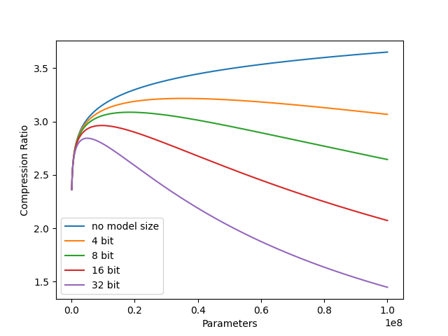

Last summer Neuralink held a compression challenge where 200x lossless compression was needed to send electrode recordings wirelessly. This was mocked as being impossible but inspired a similar challenge from comma.ai, a company developing an open source autopilot. This blogpost explains my submission to the Comma challenge that is comparable to second place.

The challenge is to "losslessly compress 5,000 minutes of driving data." 5,000 minutes is also equivalent to 83 hours or 3 days of video. An example clip is shown below.
The video is low resolution, just 256x128, but even at this low resolution the full 5,000 minutes of footage would be very large. So before providing the data Comma has already heavily compressed it using a VQ-VAE to make it easier to work with.

Using the VQ-VAE network the video is compressed from raw 256x128 frames to 10 bit 16x8 frames. This intermediate frame is called the latent representation and it being 10 bit means its values can take on any integer from 0 to 1023. If we only store the latent representation and decoder we can recover the original image. Note however that this is lossy compression which means information is lost when compressing so the reconstructed image won't exactly match the original. Below is the same example video but now compressed with the VQ-VAE.
Storing the 5,000 minutes of driving data normally takes 915 MB and the first place submission has a compression ratio of 3.4 meaning they were able to compress the data into 270 MB.
Arithmetic coding is a popular lossless compression technique. Lossless compression means that no information is lost in the process and is different from lossy compression formats such as jpeg that lose quality when compressed. To begin, arithmetic coding first needs a model that assigns a probability to each character of how likely it is to appear. An example is shown below:
| Character | Probability |
|---|---|
| a | 0.2 |
| b | 0.3 |
| c | 0.5 |
We also need a message to compress and in this case we will use "bac". To begin encoding the message we split the range from 0 to 1 into three different parts corresponding to the characters, with each interval's width dependent on its probability. Since the model assigns the highest probability to "c", it has the largest interval, while "a" and "b" have smaller intervals. The first letter of the message is "b", so the message has to be contained within the interval from 0.2 to 0.5. Since we know that the message has to be in that interval we can again subdivide it according to our characters and their probabilities. The second letter is "a" so the message must be contained within the new "a" interval, and we then further subdivide it into the three parts. We continue like this until the message has been fully encoded. The final interval that our message falls in is from 0.23 to 0.26 because, for every single point inside the interval, the first three letters of the message are "bac".

However, we haven't actually compressed the message yet. We now need to convert this range into a binary sequence that can be stored. To do this we will split the interval from 0 to 1 in half; if the interval of our message falls below 0.5 we record a 0, and if it falls above 0.5, we record a 1. For our example, since the interval 0.23 to 0.26 is below 0.5, we record a 0 and split the range from 0 to 0.5 in half. We repeat this until the binary sequence is entirely contained within the interval of 0.23 to 0.26. For the message "bac" the encoding is 001111.

To decode the encoded message, you simply do the reverse of the encoding. First, convert the binary 001111 to decimal to get 0.234375. Since this falls within the range of 0.2 to 0.5 the first letter is "b". This is repeated until the message is recovered. However, you also need an end condition, because you could continue decoding a message forever. You can either define a specific character in the vocabulary to be an end-of-sequence character or simply stop at a specific length.
What was described above is called infinite precision arithmetic coding because it requires infinite precision. Computers do not have infinite precision and if you were to try and implement this it would fail for longer sequences because the intervals would become so tiny that the computer would not be able to represent them properly. This excellent blog post explains the finite precision version of the algorithm that works for longer sequences and that I used for my implementation.
As previously mentioned for arithmetic coding to work you need a model to provide probabilities for each symbol. Conveniently included in the repository with the driving data is a GPT-2 medium sized model (about 350 million parameters) that is trained on 3 million minutes of driving data to predict the next token. What they did was flatten the 10-bit 16x8 latent representation into 128 "tokens" per frame and the model takes in past tokens as context and produces a probability distribution across all 1024 possible values for the next token.
We can use this model with arithmetic coding to compress the data, and while it works, there are two major problems. The first problem is that the model itself takes up 614 MB, so just storing it would take more than twice the space of the entire first place submission. The second problem is that because the model is so large, it is extremely slow. On my GPU (RTX 3070 Ti) it runs at 130 tokens per second which doesn't sound terrible, but since there are 768 million tokens (5,000 minutes * 1,200 frames per minute * 128 tokens per frame) it would take 68 days to decode all of them.
As an aside, this isn't actually a novel idea, and this paper proposed exactly this method but with language models and text compression instead of driving data.
To get a better baseline we can train a similar model to the one Comma trained but with 100x less parameters. This should make it significantly faster and easier to work with. Below is just the loss for this model.
Using the cross entropy loss from training the model we can estimate how well it will compress. In PyTorch cross entropy uses natural log, but if we convert it to base 2 we get that the model needs about 3.6 bits per symbol. Since each symbol normally takes 10 bits we can do 10/3.6 to get a compression ratio of 2.78. This is already better than the second place submission! It's not quite right though because we also need to store the model which is about 7 MB so the actual compression ratio will be closer to 2.7.
Even though this model is 100x smaller, speed is still an issue. It now generates at 908 tokens per second which is an improvement, but it would still take 10 days to decompress all the data.
We can always just continue to train smaller and smaller models until it is fast enough, but the performance drops as it gets smaller so it can't be too tiny. Let's take a moment and think about what the model is actually doing.
Currently the model takes in some tokens as context, then outputs a probability distribution over all possible next tokens that gets passed to the arithmetic coder to compress the sequence. Since each frame of video is 128 tokens this process repeats 128 times to compress a single frame and this constant switching between the model doing inference and the arithmetic coder compressing is not good for performance.
To get around this problem you can make an independence assumption that tokens within a frame won't help predict other tokens within the same frame. The context can be restricted to just the previous frames. With this assumption, we can modify the transformer to instead produce probabilities for every single token in a frame at the same time. This is a great idea because it means the model is 128 times faster for free and it removes some of that back and forth between the model and arithmetic coder.
Another advantage of predicting on a frame level actually comes from an implementation detail with the original model. If you flatten and then feed multiple frames into the model it won't be able to tell where one begins and another ends. To fix this, an extra token is added to the vocabulary called the BOS, or "Beginning of Sequence" token, and it's used to separate frames. With this token each frame becomes 129 tokens instead of 128 which is now extra overhead when compressing. However, with the modified frame level transformer we can get rid of the BOS token completely and instead add another positional embedding for frame position.
To check that this independence assumption is reasonable, we can compare the loss graphs of the old transformer that predicted on token level and the new frame level transformer. While this is not an exact apples to apples comparison because of the differing vocabulary sizes (1024 vs 1025), it should be close enough.

Both models eventually converge to about the same loss so this seems to validate the assumption. The great thing about this is that the new model can now generate at a blazingly 116,224 tokens per second and decode all 5,000 minutes of driving data in 2 hours!
I arbitrarily chose the size of the baseline model to be 100x smaller than the Comma model but the number of parameters has a major impact on the eventual compression ratio. A larger model has a lower loss and can therefore compress better but the model itself takes up more space. Conversely a smaller model takes up less space but compresses worse. There is some optimal model size where the tradeoffs are balanced to achieve the maximum compression ratio.
To get an idea of how model size impacts loss I trained many differently sized models to convergence. They're relatively small, the largest being only 9 million parameters but I am GPU poor and don't want to wait days for a training run.
| params | n_layer | dim | n_head | muon_lr | adamw_lr |
|---|---|---|---|---|---|
| 196608 | 1 | 128 | 1 | 0.02 | 0.0003 |
| 393216 | 2 | 128 | 2 | 0.02 | 0.0003 |
| 1572864 | 2 | 256 | 2 | 0.02 | 0.0003 |
| 6291456 | 8 | 256 | 8 | 0.02 | 0.0003 |
| 9437184 | 12 | 256 | 8 | 0.02 | 0.0003 |
Every model was trained with a batch size of 1,048,576 for 1 epoch where a single epoch is 13917 steps so about 14 billion tokens or 95,000 minutes of driving data. For most of the models this is much more training than needed and certainly more than the compute optimal amount. Every model also has a context length of 4096 tokens or 32 frames and I used Muon over AdamW for all the applicable parameters.
This is a log-log plot with the cross entropy train loss on the y-axis and compute measured in PetaFLOP-days on the x-axis. The larger models eventually cross the smaller models and the left edge of all the training runs trace out a compute-efficient frontier.
Since we have many differently sized models and their loss we can use them to fit a power law as proposed in "Scaling Laws for Neural Language Models." Following their convention I am using non-embedding parameters and non-embedding compute. Below you can see the fitted power law on another log-log plot where the x-axis is parameter count and the y-axis is cross entropy train loss.
We can use this to approximate the loss for a model with N parameters, or say you need a certain loss L you can find how large the model would need to be. We can also use this function to plot the compression ratio against parameters.
This is not a log-log plot and it demonstrates how quickly the compression ratio tapers off. A model with a compression ratio equal to first place would need 33 million parameters but of course the model itself takes up space. We can factor this into the equation to get the final compression ratio equation.
Now instead of increasing forever the lines eventually peak at some maximum compression ratio and as the size of the model increases it begins to dominate the compression ratio and erase all savings from the lower loss. Each of the different lines represent different precisions for storing model parameters. For all my models I used 16 bit parameters but you can see reducing that to 8 or even 4 would likely improve the compression ratio (although model performance might degrade from lower precision).
So we have a model that is close to the optimal model size but we're back to where we started because now it's too slow again. It is only able to get around 7,000 tokens per second which means it would take about 30 hours to decompress. Luckily there are a few inference optimizations we can implement to help!
One very common and easy performance gain is KV caching. Currently when doing a forward pass the model is computing the keys and values for every single token in the context, but this is pretty wasteful because the keys and values do not change for already seen tokens. Thus the idea of kv caching is to compute the keys and values for a token once and then store them to be reused. There is one problem and it's that since I used learned positional encodings in training I have to chunk sequences into context length sized blocks to use KV caching. At the beginning of each chunk the tokens will have no context so the predictions will be worse. On average this comes out to be about 1.6 bytes of overhead per minute or lowering the compression ratio by 0.08.
Before KV caching the model was decoding at 7,000 tokens per second and after it jumped to about 18,000. This is a pretty nice improvement but we can keep going with improvements.
Currently each minute of driving data is being compressed sequentially one after the other, but transformers can do batched inference. If we pass 32 minutes of driving data to the model it can do a single forward pass generating probabilities for all of them in parallel. Batching alone takes the performance from 7,000 tokens per second to 10,000 tokens per second but we can actually combine KV caching and batching to increase the final speed to 70,000 tokens per second. This brings the final decoding time to 3 hours which is still pretty long but manageable.
To end, I just wanted to show off some cool things we can do with the models. Originally all the sequences were stored with the same number of bits, but the arithmetic coding allows for different sequences to be compressed to different sizes. We can sort all the sequences according to their compressed sizes and see what the differences are. Below is the smallest minute of driving data and it is 27 KB. The clip is not very exciting and most of it is sitting still with nothing in the frame changing which makes sense since the fewer changes there are between frames the easier it is for the model to predict.
For comparison, below is the largest minute of driving data and it is 110 KB. So in some sense this clip has 4 times more information than the previous clip and this is evident when you watch it. It is raining in the clip making predicting what will happen next very difficult as things pop in and out of frame constantly.
We can also use these models to try and predict the future. If we feed them some driving video as context we can sample tokens into the future autoregressively and continue the video clip. For the clip below the first 10 seconds is the context and then the next 10 seconds is predicted by the 9 million parameter model.
The prediction is surprisingly coherent and the general features like the sky and road remain mostly consistent until the end. In contrast this clip below is the next 10 seconds as predicted by a 0.2 million parameter model.
It very quickly diverges after the 10 second mark until it is not even recognizable as the original clip. The scene changes between night and day and various random things appear to pop into the frame randomly. This is a very nice visual way to see the differences between the two models and gives some intuition about how predicting what will happen next better also leads to better compression.
Obviously there is still room for improvement here, in both compression ratio and the speed of decoding. You could quantize the model to 8 or 4 bits or do weight tying between the encoder and decoder or not even store a model at all and learn it as you decode.
I think this last one is the most promising for getting very high compression ratios. Since you don't have to send a model you can make it as large as you want and larger models are more sample efficient so the compression ratio will improve the larger you make it even when training on the same data. The only problem here is of course speed because you have to retrain the model from scratch every single time you want to compress or decompress the data.
The most obvious way to increase the decompression speed is to use multiple GPUs. Running 4 GPUs decoding sequences in parallel would make decompression 4 times faster and even more would probably bring the compression times into the practical range.
Finally I would like to thank Comma for putting on this challenge, it was very fun!